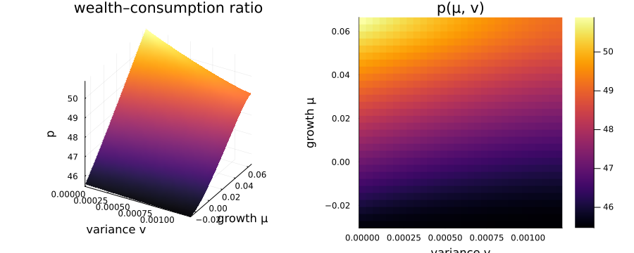

Bansal–Yaron (2004): long-run risk (two states)
The long-run-risk model has two state variables, so it exercises the package's 2D machinery — cross-derivatives and a sparse Jacobian on a genuine grid. Consumption growth has a small, persistent expected-growth component $\mu$ and a stochastic variance $v$:
\[d\mu = \kappa_\mu(\bar\mu - \mu)\,dt + \nu_\mu\sqrt{v}\,dW_\mu, \qquad dv = \kappa_v(\bar v - v)\,dt + \nu_v\sqrt{v}\,dW_v.\]
With Epstein–Zin preferences the unknown is the wealth–consumption ratio $p(\mu, v)$, which solves a nonlinear elliptic PDE. The gradient-nonlinear risk terms $\sigma_\mu^2 p_\mu^2/p$ and $\sigma_v^2 p_v^2/p$ come from the market prices of long-run-risk and variance risk.
The model
using EconPDEs, Distributions, Plots
Base.@kwdef struct BansalYaronModel
μbar::Float64 = 0.018
vbar::Float64 = 0.00073
κμ::Float64 = 0.252
νμ::Float64 = 0.528
κv::Float64 = 0.156
νv::Float64 = 0.00354
ρ::Float64 = 0.024
γ::Float64 = 7.5
ψ::Float64 = 1.5
end
function (m::BansalYaronModel)(state::NamedTuple, u::NamedTuple)
(; μbar, vbar, κμ, νμ, κv, νv, ρ, γ, ψ) = m
(; μ, v) = state
(; p, pμ_up, pμ_down, pv_up, pv_down, pμμ, pμv, pvv) = u
# drifts and volatilities of consumption, μ and v
μc = μ
σc = sqrt(v)
μμ = κμ * (μbar - μ)
σμ = νμ * sqrt(v)
μv = κv * (vbar - v)
σv = νv * sqrt(v)
# upwind each first derivative on the sign of its drift
pμ = (μμ >= 0) ? pμ_up : pμ_down
pv = (μv >= 0) ? pv_up : pv_down
σp_Zμ = pμ / p * σμ
σp_Zv = pv / p * σv
σp2 = σp_Zμ^2 + σp_Zv^2
μp = pμ / p * μμ + pv / p * μv + 0.5 * pμμ / p * σμ^2 + 0.5 * pvv / p * σv^2
# market prices of risk
κ_Zc = γ * σc
κ_Zμ = -(1 - γ * ψ) / (ψ - 1) * σp_Zμ
κ_Zv = -(1 - γ * ψ) / (ψ - 1) * σp_Zv
r = ρ + μc / ψ - (1 + 1 / ψ) / 2 * γ * σc^2 - (γ * ψ - 1) / (2 * (ψ - 1)) * σp2
pt = -p * (1 / p + μc + μp - r - κ_Zc * σc - κ_Zμ * σp_Zμ - κ_Zv * σp_Zv)
return (; pt)
endSolving it
The grid spans the ergodic ranges of $\mu$ (Normal) and $v$ (Gamma). The $\sqrt v$ diffusion vanishes at $v = 0$, a degenerate boundary where no condition is imposed.
m = BansalYaronModel()
μn, vn = 30, 30
μdistribution = Normal(m.μbar, sqrt(m.νμ^2 * m.vbar / (2 * m.κμ)))
μs = range(quantile(μdistribution, 0.01), quantile(μdistribution, 0.99), length = μn)
νdistribution = Gamma(2 * m.κv * m.vbar / m.νv^2, m.νv^2 / (2 * m.κv))
vs = range(quantile(νdistribution, 0.0), quantile(νdistribution, 0.99), length = vn)
stategrid = (; μ = μs, v = vs)
yend = (; p = ones(μn, vn))
result = pdesolve(m, stategrid, yend)Residual_norm: 1.3964022816064953e-9
Zero: OrderedDict(:p => [45.58650072461048 45.57888126617909 … 45.46944200179283 45.47024824794413; 45.73759993367825 45.711194678338714 … 45.50090780657751 45.501241677038266; … ; 50.71468444374673 50.649528318595756 … 49.08743310352034 49.070040313589786; 50.88977485914276 50.80458325572998 … 49.1342851228238 49.116295315982875])
The solution
The wealth–consumption ratio increases in expected growth $\mu$ and falls with variance $v$: investors pay more for the claim when future growth is high, and less when the economy is riskier. Because $p$ is defined over the $(\mu, v)$ plane, we can show it as a surface and as a heatmap.
p = result.zero[:p]
s1 = surface(vs, μs, p; xlabel = "variance v", ylabel = "growth μ", zlabel = "p", colorbar = false, title = "wealth–consumption ratio")
s2 = heatmap(vs, μs, p; xlabel = "variance v", ylabel = "growth μ", title = "p(μ, v)")
plot(s1, s2; size = (900, 360))
This page was generated using Literate.jl.